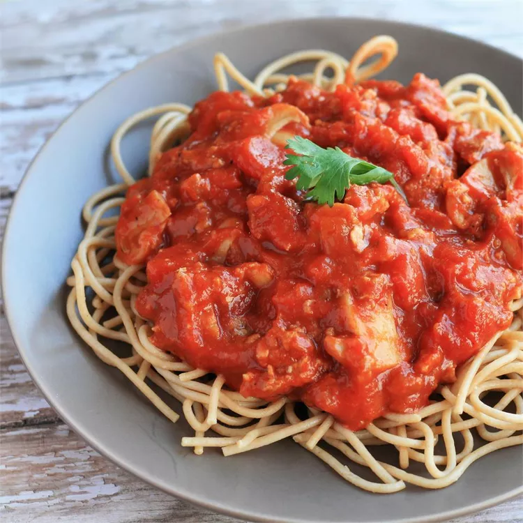

Spaghetti

An easy to make sloppy staple of family dinners that everyone is sure to love.
Prep Time: 10 mins
Cook Time: 2 hours 15 mins
Total Time: 2 hours 25 mins
This will yield 4 servings
Ingredients
- 1 pound lean ground beef
- 2 1/2 cups chopped tomatoes
- 1 1/3 (6 ounce) cans tomato paste
- 1 (4.5 ounce) can sliced mushrooms
- 2 tablespoons dried minced onions
- 1 teaspoon salt
- 1 teaspoon dried oregano
- 3/4 teaspoon white sugar
- 1/4 teaspoon ground black pepper
- 1/8 teaspoon garlic powder
- 12 ounces spaghetti
Steps
- Heat a large skillet over medium-high heat. Cook and stir ground beef in the hot skillet until browned and crumbly, 5 to 7 minutes. Drain and discard grease.
- Transfer beef into a large pot over low heat; stir in tomatoes, tomato paste, mushrooms, onion, salt, oregano, sugar, pepper, and garlic powder. Cover and simmer, stirring occasionally, for 2 hours.
- Bring a large pot of lightly salted water to a boil. Cook spaghetti in the boiling water, stirring occasionally until tender yet firm to the bite, about 12 minutes; drain. Serve meat sauce over spaghetti.
Back to homepage